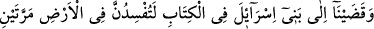
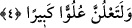

artırdı. Hatta Nuh (a.s.)’la gemide bulunanların zürriyetleri olan İsrâiloğulları’na onları
şirkten kurtarıp tevhîde hidâyet eden Tevrât’ı indirmek sûretiyle ihsanda bulundu.
4. Biz, Kitap’ta İsrailoğulları’na: Sizler, yeryüzünde iki defa fesad çıkaracaksınız
ve azgınlık derecesinde bir kibre kapılacaksınız, diye bildirdik.
“Biz, Kitap’ta” Tevrât’ta “İsrailoğulları’na:” Allah’a yemin olsun ki “Sizler,
yeryüzünde” Şam bölgesinde ve Beytü’l-makdis’te bir bozgunculuktan sonra başka bir
bozgunculuk çıkararak “iki defa fesad çıkaracaksınız” Onların çıkaracağı fesadlardan
ilki, Tevrât’ın hükmüne muhâlefet etmeleri, Yeşaya’yı öldürmeleri ve Yeremya’yı da
kendilerini Allah’ın gazâbından korkuttuğu zaman hapsetmeleridir. İkinci fesadları,
Zekeriyya ve Yahya (a.s.)’ı öldürmeleri, İsâ (a.s.)’ı da öldürmeye teşebbüs etmeleridir.
“Ve azgınlık derecesinde bir kibre kapılacaksınız,” Allah’a itâattan çıkıp
azacaksınız. Yâni Bana itâate baş kaldıracaksınız. “el-Ulüv”, Allah’a karşı gelmek,
azmak demektir “diye bildirdik”; yâni onlara kesin ve açık bir şekilde bildirdik, beyan
ettik ve vahy ettik. Mûsa (a.s.)’a vahy ve inzal, aynı zamanda onlara da vahy ve inzâl
demektir.
Kâşifî der ki: “Bu kıssada ihtilaf çoktur. Her müfessir onu başka türlü nakletmiştir.
Fakat en doğru ve meşhur olan görüş Muhtâru’l-kısas ve şerhi ile diğer peygamberlerin
haberlerine dâir kitaplardadır. Şöyle ki İsrâiloğulları’nın saltanatı Süleyman (a.s.)’ın
evlâdından zayıf ve topal bir kimse olan Sidkiya adlı şahsa ulaşınca etrafta olan krallar
İlya vilâyetine tamah ettiler ve ele geçirmek için o tarafa yöneldiler. İlk olarak Musul
meliki Sencârib geldi. Onun ardından Azerbaycan kralı Selman geldi. Her ikisi de
Beytü’l-makdis’i almak için gelmişti. Birbirleriyle savaşa tutuştular. Onların arasında
savaş ateşi alevlendi ve muharebe deryası husumet rüzgarıyla dalgalandı.
Seraskerler askerleri birbirine düşürdüler
Ölüm salâsını âleme bıraktılar, düşürdüler
Temrenler dolu gibi âleme yağdı
Yeryüzü kandan kırmızı lâle tarlasına döndü
Sonunda ilâhî heybetin satveti zuhûr etti de iki ordu birbirini perişan etti. Onların
ganimetlerini İsrâiloğulları aldı. Diğer bir kere Roma kralı, Slavların kralı ve Endülüs
kralı, hepsi kılıç vuran ve mızrak saplayan yağmacı askerleriyle Beytü’l-makdis’te
toplandılar. Sultanlık ziyneti ortaklık kabul etmediğinden onlar birbirleriyle çekişmeye
başladılar, askerlerini hazırlamaya ve tatbikat yapmaya koyuldular.